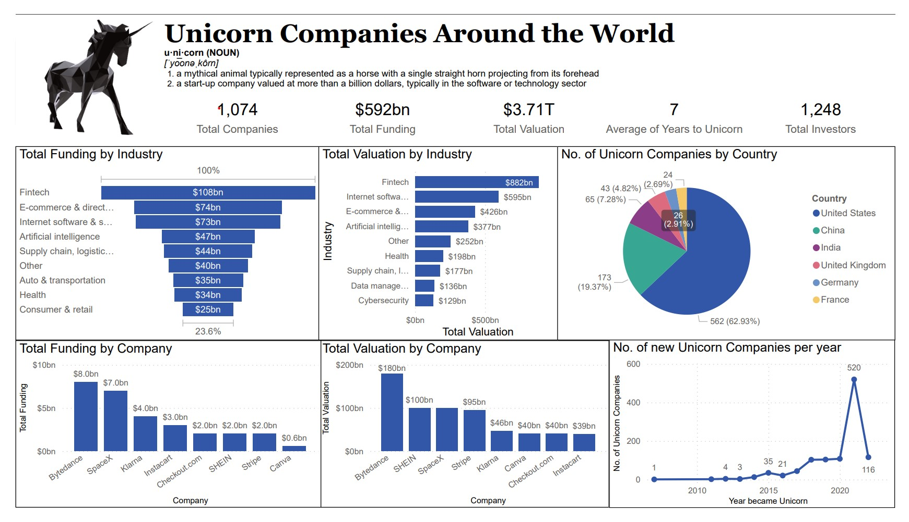

Unicorn Companies around the World
Power BI.

Dataset source: Maven Analytics.
Unicorn companies are those with an evaluation over $1 Billion dollars.
This dataset includes just over 1,000 records and includes details on the Company's Current Valuation,
Total Funding, Country of Origin, Industry, Investors, and the years they were founded and
became unicorns.
Color-wise, I stuck to the default blue color because it looks good and clean.
For the visualization, I knew I wanted to focus mainly on Valuation and Funding.
I also decided to add visuals that provided quick insight into the locations of companies and
the years companies became unicorns.
These visualizations helped gather some insights of the current landscape of unicorn companies.
- Most companies are located in the United States.
- Fintech Industry recieved the highest funding, i.e. $108bn.
- 520 companies joined the Unicorn list in 2021, the year seeing the most additions yet.
- Lastly, Otto Back Healthcare took 98 years to become a Unicorn.
This embed item is Power BI dashboard file showing Unicorn Companies around the world.
-->

{kind=link}